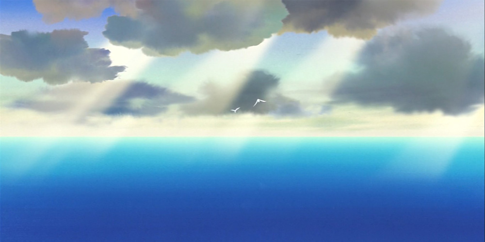

留言栏
——2020-5-4
|
|
||||||
| 日 | 一 | 二 | 三 | 四 | 五 | 六 |
有关作者
黄天兵
一位大二学生，就读于西南石油大学，正在学习有关计算机的知识，希望成为一个IT达人
仰望天空
喜欢像冰晶一样湛蓝的天空，在时间里幻化。细碎的风吹动西天的云彩，沉淀着彩虹似的梦，谱一曲遥远的歌，萦绕着我的心房。远处村庄的炊烟氤氲了夕阳中的红霞，邂逅了光阴的荏苒。
逐浪涛天，没有圣地亚哥与大马林鱼，也没有凶狠的大白鲨，只有风过时的朵朵浪花。明澈的海水映着天的蓝，隐藏海底千年的沉船和照亮黑夜的珍珠。蓝天枕着白云，卧听松林尖的涛声，作着晴天的梦。
对蓝天的热爱和向往从小就有，就像与生俱来一样，总感觉蔚蓝的天空在召唤着我，邀我去天空的世界。也是从记忆的伊始我便习惯了仰望天空，总感觉那片天有神秘的事物在吸引着我，牵动我的着灵魂。
直到长大后我才知道，那一直牵引着我的正是天空的广袤，一望无际的天宇以他的开阔和纯洁净化着我的灵魂，抚平的我的忧愁和哀伤。
每一次仰望天空，我都感觉到我在飞翔，自在无忧地遨游，忘却所有的烦恼。喜欢那种宁静，喜欢那种无暇，更喜欢蓝天的浩瀚。
习惯了仰望天空，发现天空每时每刻无不在变化着，你永远找不到一样的天空。风起云涌，日月交替，日出日落，天空一直是动态前行的，就像时间的运行一样，永远都不会停留在任何一时刻。如此多彩的天空又怎会让人厌倦呢？
如果让我唱一首歌，那我会唱一首赞美天空的歌；如果让我写一首诗，那我会写一首体现天空博大的诗；如果让我选择心灵的归宿，那我会选择那一方湛蓝的天空。